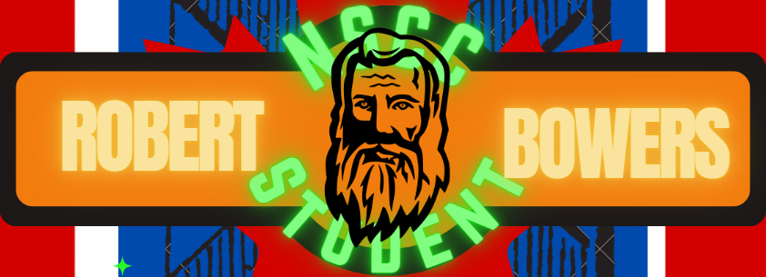

Welcome
This is the first section of the website.
About
This section can contain information about the website.
Contact
This section can contain contact information.
Contact Me
This is the first section of the website.
This section can contain information about the website.
This section can contain contact information.
Contact Me